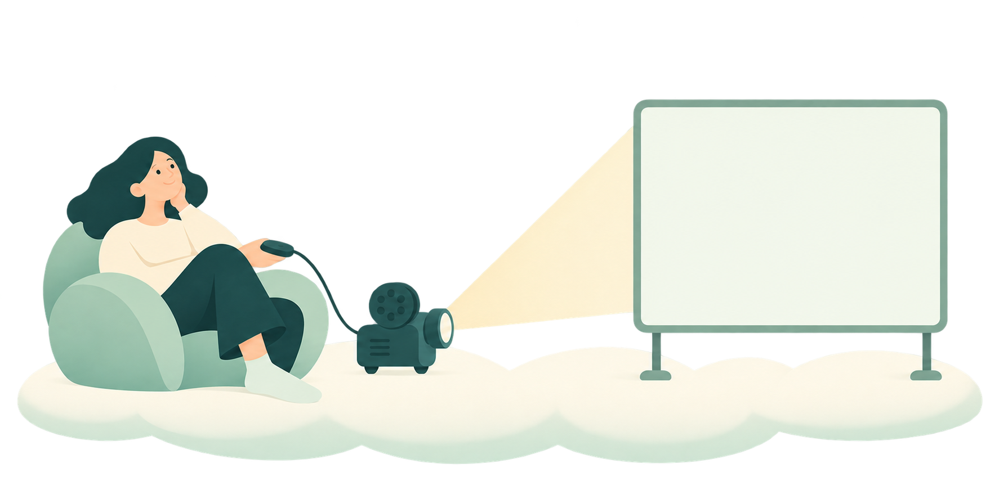
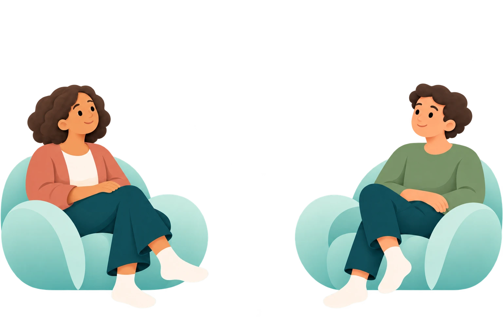

Rain at the cabin
Quiet Evenings
Villow gives you a feed that ends, boundaries you choose, and space to reflect on what was worth watching.
Get started
Bring channels you choose, saved videos and discoveries into one feed. Watch what interests you, save for later, or leave the rest.

Small Garden
Swipe or drag the top card. Buttons work too.
Choose your viewing limits. Reflect on what felt worthwhile, if you like.
Choose a daily limit that works for you.
Consider whether a video was worth your time.
Open Villow on your phone, tablet or computer. Your saved videos, settings and viewing activity stay together.

Pass along a video with a personal note, and watch a friend’s pick in your own time.

The very serious business of doing nothing

Invite friends, add videos to a shared queue and watch in sync.
Across social and video apps, small design choices shape what we do next. Here are four familiar patterns, and how Villow approaches them.
Streak at risk · Come back today
Some apps reward coming back each day. Keeping the streak can become a reason to return.
Limit decreased · streak kept
A streak for keeping your boundaries. Keep or lower your limits to keep it growing—even on days you don’t watch.
Another video, one click away. Recommendations make it easy to carry on without pausing to decide if you want to.
An optional to-do sidebar keeps your own plans in sight, ready for when you decide to stop.
On some apps, usage controls sit inside settings, away from the watching experience.
Check usage and adjust limits from the main navigation—centre on mobile, sidebar on desktop. Tailor your feed, reminders and appearance to suit you.
Send · Post · Repeat
Some social apps turn sending and posting into a score friends can see. Being active becomes something to display.
Choose to let friends see your usage. A reason to think twice about how much you watch, and cut back where you want to.
Some ideas go beyond what an independent app can build. YouTube’s infrastructure could make them practical at a wider scale, with lessons for other social platforms.
Explore the design conceptsWatch YouTube with a feed that ends and limits you choose.
Villow is a working experiment in how YouTube could be designed differently. Your feedback can help improve it.
Help fix the webVillow uses YouTube’s videos and official player. An independent project, not affiliated with YouTube or Google.